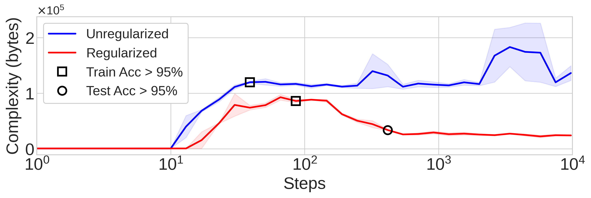
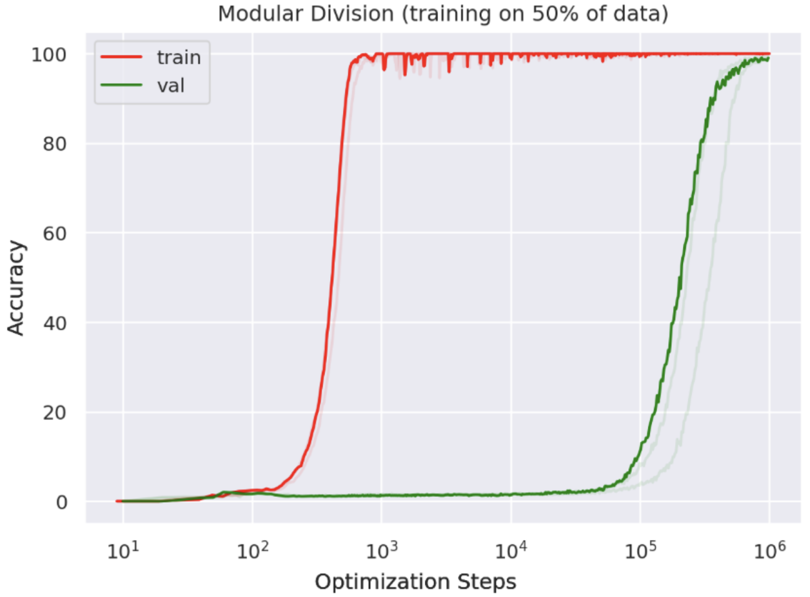
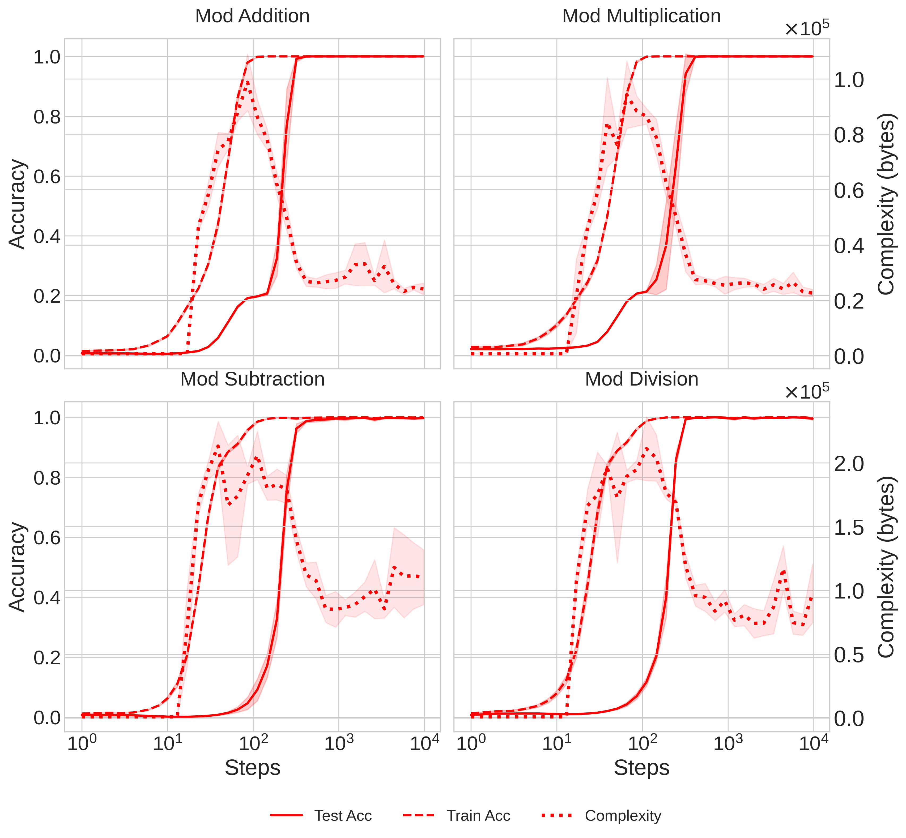
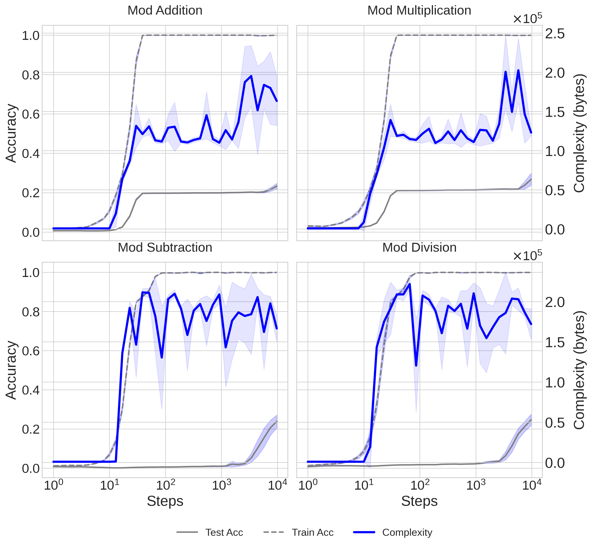

 In grokking experiments, the unregularized network’s complexity rises and remains high as it memorizes the training data, never generalizing. The regularized network’s complexity similarly rises, but as it groks and generalization occurs, the complexity falls.
When can we say a neural network “understands” the task it has learned? To answer this question, we study networks which suddenly transition from memorization to perfect generalization: the “grokking” phenomenon first reported by Power et al. We introduce a new way to measure the complexity of neural networks based on lossy compression and Kolmogorov complexity, and use this framework to track the complexity dynamics of neural networks which grok. We find a characteristic rise and fall of complexity in the networks, which corresponds to memorization followed by generalization.
When training neural networks, we typically expect train and test loss to decrease together. The grokking phenomenon occurs when there is a large gap in training time between train and test loss going to zero. When the network gets 100% accuracy on the training data but very low accuracy on the test data, we say the network has “memorized” its training data (as opposed to learning an explanation for the data which generalizes). For example, if we train a small transformer to do modular arithmetic, we see that after a few hundred training steps, the model has fit the training data perfectly:  However, it does not generalize until around \(10^5\) training steps. This network is trained with a small amount of weight decay for regularization. If we don’t regularize the network at all, it never generalizes and stays in the memorization phase indefinitely. The grokking phenomenon provides a crisp example of a generalization phase transition in neural networks. Studying this phase transition can provide insights into the nature of generalization.
Neural network complexity is often identified with model size, i.e. parameter count, or with the total norm of the weights. However, neither of these measures adequately capture the nature of model complexity:
While these examples might feel contrived, it’s important to understand how these proxy measures go awry. We fix these issues by using a universal measure of complexity, the Kolmogorov Complexity, and show how to approximate this measure appropriately for neural networks. Using this measure, we find that there is a characteristic rise and fall of complexity in the networks as they transition from memorization to generalization.
Occam’s Razor says that between equally good explanations, the simplest one generalizes best. This intuitive principle can be made sharp by unifying ideas from statistical generalization bounds and the Minimum Description Length (MDL) principle. The MDL principle says that the best model \(M\) for some dataset \(D\) is the one which minimizes the sum of the model’s complexity \(C(M)\) and the entropy of the data under the model \(H(D|M)\): \[\begin{equation} \min_M H(D|M) + C(M) \end{equation}\] Intuitively, the better a model explains a dataset, the more it reduces the apparent entropy of that dataset, \(H(D|M)\). However, this comes at the cost of specifying the model. You always have to specify a model to reduce entropy, which takes information. We can always reduce the entropy to zero by making the model be e.g. a lookup table of all the training data—a rather trivial “model”. A model is good only if it reduces entropy more than it requires information to specify. In the lookup table case, we’ve just exchanged all the data entropy for model complexity, with no net compression savings. Solutions like these are called “memorizing” solutions, and we do not expect them to perform well on unseen data. A good model compresses the data by reducing its entropy while being itself as simple as possible, hence minimizing the sum of these two terms.
Across a number of fields of statistical machine learning, there are generalization bounds which relate the expected test error to the measured train error and the model’s complexity:
Notice that if the error terms are identified as entropies, as is typically the case, models which minimize the MDL principle also minimize these generalization bounds! Hence, models which best compress the data are the ones which are expected to generalize best.
The MDL shows how low-complexity models are preferred when
compressing data, and statistical generalization bounds show how models
which satisfy the MDL are expected to generalize best. But what is
complexity? The Kolmogorov Complexity \(K\) of a string s is defined to be the
length of the shortest program \(p\)
which produces s: \[\begin{equation}
K(s) = \min \{ \texttt{len}(p) | \texttt{exec}(p) = s \}
\end{equation}\] Complexity should have units of information,
since it appears summed with entropy in the previous equations. If our
program is defined as a binary string, then this quantity has units of
bits. Strings like 11111111… are simple because they have a
short description (program) which produces them:
print ‘1’ N times. Strings like 100101011010…
are complex because they lack regularity and cannot be described
compactly. We say a string is algorithmically
random if it has no description shorter than itself, i.e. \(K(s) \geq \texttt{len}(s)\).
Notice that this conception of complexity is intimately related to compression: simple strings are those which are highly compressible, whereas maximally complex (algorithmically random) strings are not at all compressible. In fact, while we cannot compute the Kolmogorov Complexity, we can upper-bound it by compression: if we compress our string, then the compressed data with the decompressor is a program which prints the original string. So the tighter we can compress the data, the tighter a bound on its complexity we can produce. We cannot know a string’s true complexity, even in principle, but we can get tighter and tighter upper-bounds on how complex it is, by compressing the string more and more.
Compressing the weights of our neural network lets us bound its complexity by the compressed filesize of the weight vector. However, a problem with estimating complexity by compression is the presence of noise in the network weights. Networks are randomly initialized and trained with a stochastic process, so they contain a lot of random information which prevents useful compression, and interferes with complexity estimation. To fix this, we take inspiration from rate–distortion theory, which formalizes lossy compression. Proper lossy compression requires the notion of a distortion function, which measures the degree and kind of distortion we are willing to accept when lossily compressing. For image compression schemes like JPEG, the distortion function captures human visual perceptive similarity. JPEG exploits the fact that humans are insensitive to high-frequency details in images, and removes high-frequency information from the image representation. This results in large savings in the compressed filesize for minimal distortion according to a model of human perception. To extend this idea to neural networks, we set the distortion function to be equal to the loss function. Just like JPEG, we coarse-grain the network weights, and achieve significant increases in compression rates with little to no decrease in performance under the loss function. Our compression scheme works as follows:
We always search for the coarsest set of weights \(\tilde{\theta}\) that satisfy the distortion bound, since we want the tightest possible upper-bound on the complexity. We use quantization and low-rank approximation to coarse-grain the weights, which we discuss more in the paper.
Throughout training, we track the complexity of the networks by coarse-graining and compressing their weights. The compressed filesize of the coarse-grained weights is a tight bound on the network complexity. Monitoring the complexity of the networks on the grokking tasks, we observe that the complexity first rises as the networks memorize their training data, and then falls as the networks generalize, and a simple pattern/explanantion emerges in the network.
 Network complexity and train and test accuracy vs training steps. As train accuracy goes to \(100\%\), the complexity rises. As generalization occurs and test accuracy approaches \(100\%\), the complexity falls as the networks learn a simple explanation of the data.
Without the coarse-graining procedure, naïvely compressing the weight vectors would show a roughly flat line throughout training with filesizes over an order of magnitude larger. The coarse-graining procedure is crucial to remove noise and reveal the sensitive complexity dynamics during training. If we plot the complexity for unregularized networks which never generalize, we see that their complexity stays high after memorization:
 Network complexity for unregularized neural networks which never grok. Their complexity remains high after memorization.
Complexity is a dynamical quantity that is constantly changing as networks learn different representations. We demonstrate that when sudden generalization occurs during grokking, it corresponds to a rapid fall in the complexity of the network. We know from statistical generalization bounds that the representations which generalize best are those which best explain the data and are simplest. A deeper understanding of complexity can help us understand phase transitions in learning systems, and the emergence of abstractions which generalize. Using intensive measures like complexity can also help us predict the generalization capabilities of models without reference to a test set, which is critical as the range of model capabilities increases. For more details, please see our paper!